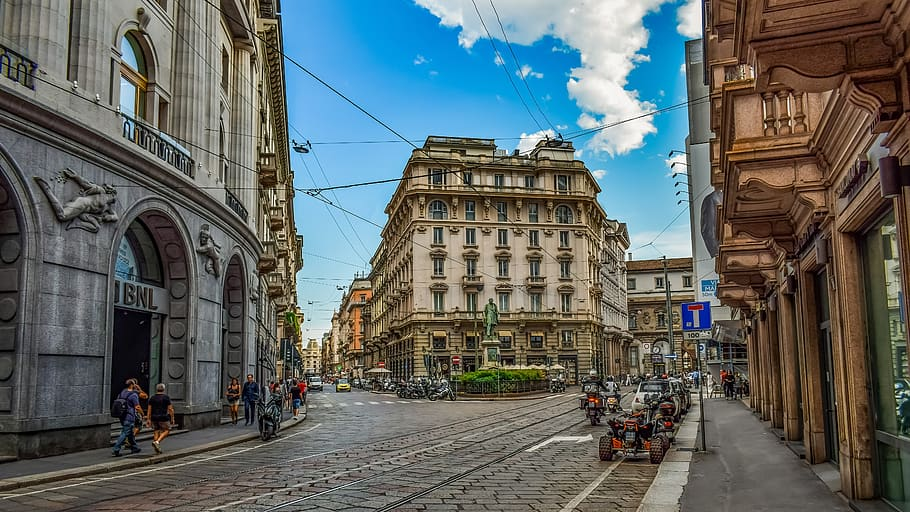

Milano, al doilea cel mai mare oraș al Italiei și capitala regiunii Lombardia, întruchipează o combinație unică de bogăție istorică, profunzime culturală și dinamism modern. Cunoscut la nivel global ca un centru al modei și designului, Milano servește și ca motor economic al Italiei, influențând semnificativ finanțele, comerțul și industria. Acest eseu explorează identitatea complexă a orașului Milano, urmărindu-i evoluția istorică, semnificația culturală și arhitecturală, rolul în modă și design, puterea economică și stilul de viață contemporan.
Fondat de celți în jurul anului 600 î.Hr., Milano, cunoscut atunci sub numele de Mediolanum, a fost ulterior cucerit de romani în anul 222 î.Hr. În timpul Imperiului Roman, Milano a devenit un centru administrativ și comercial crucial. Locația sa strategică a facilitat creșterea sa într-un important centru urban.
După căderea Imperiului Roman, Milano a îndurat diverse invazii și schimbări de conducere, inclusiv ostrogoții, lombarzii și francii. Până în secolul al XII-lea, Milano a apărut ca un puternic oraș-stat, cu o economie robustă alimentată de comerț și activități bancare.

Secolul al XV-lea a văzut Milano sub conducerea familiei Sforza, inaugurând o perioadă de înflorire artistică și arhitecturală. Leonardo da Vinci și-a petrecut o parte semnificativă a carierei sale în Milano, creând capodopere precum "Cina cea de Taină". Această epocă a consolidat reputația Milano-ului ca un centru al artei și culturii renascentiste.
În secolul al XIX-lea, Milano a jucat un rol crucial în mișcarea de unificare a Italiei. Orașul a trecut printr-o industrializare semnificativă, stabilindu-se ca un centru de frunte pentru manufactură și finanțe. Această bază industrială a pus fundamentul pentru importanța economică contemporană a Milano-ului.
Catedrala din Milano (Duomo di Milano) este o minune arhitecturală în stil gotic și una dintre cele mai mari catedrale din lume. Fațada sa intricate, împodobită cu numeroase turnuri și statui, și statuia de aur a Madonninei de pe cel mai înalt turn sunt simboluri iconice ale Milano-ului.
Castelul Sforza (Castello Sforzesco), odată reședința familiei Sforza care domnea, acum adăpostește mai multe muzee și colecții de artă, inclusiv lucrări de Michelangelo. Arhitectura castelului și comorile pe care le găzduiește evidențiază patrimoniul renascentist al Milanului.
Găzduită în Mănăstirea Santa Maria delle Grazie, "Cina cea de Taină" a lui Leonardo da Vinci este o capodoperă a artei renascentiste. În ciuda secolelor de uzură și eforturilor de restaurare, rămâne un punct principal de atracție pentru iubitorii de artă din întreaga lume.
Cunoscut pentru atmosfera sa boemă, cartierul Brera găzduiește Pinacoteca di Brera, o galerie de artă de clasă mondială care prezintă lucrări ale maeștrilor italieni precum Caravaggio și Raphael. Acest areal este de asemenea renumit pentru patrimoniul său artistic și scena culturală vibrantă.
Gazdă pentru branduri de lux precum Prada, Versace și Armani, Milano este un centru al modei de înaltă clasă. Orașul găzduiește Săptămâna Modei din Milano, unul dintre cele mai importante evenimente din calendarul global al modei, atrăgând designeri, modele și pasionați de modă din întreaga lume. Quadrilatero della Moda (Pătratul Modei) este un cartier plin de buticuri de lux și magazine de designeri, ilustrând măiestria în moda a Milanului.
Săptămâna Modei din Milano, inclusiv Salone del Mobile, este cel mai important eveniment din lume în domeniul designului de mobilier și decor interior. Arhitectura modernă a orașului, precum Pădurea Verticală (Bosco Verticale) și Turnul UniCredit, ilustrează designul inovator și durabil, consolidând poziția Milanului în fruntea arhitecturii contemporane.